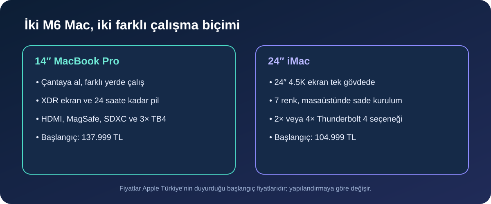
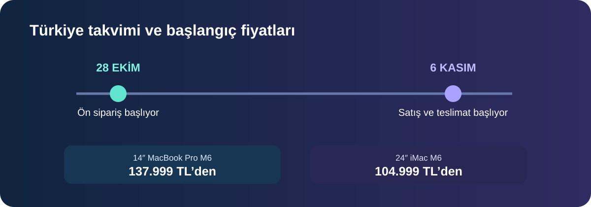

Apple, 27 Ekim’de M6 işlemcili 14 inç MacBook Pro ile yeni iMac’i duyurdu. İki bilgisayar da 28 Ekim’de ön siparişe açılacak ve 6 Kasım’da satışa çıkacak. Türkiye başlangıç fiyatı dizüstü modelde 137.999 TL; iMac’te 10 çekirdekli sürüm için 104.999 TL olarak açıklandı. Bu yazıda duyurulan teknik özellikleri, fiyat farkını ve iki ürünün kime daha uygun olduğunu bir arada inceliyoruz.
Bu ikili aynı çipi kullansa da birbirinin doğrudan alternatifi değil. MacBook Pro taşınabilirlik ve dahili pil sunuyor; iMac ise büyük ekranı, masaüstü düzeni ve renkli hepsi-bir-arada gövdesiyle ev veya ofiste sabit bir çalışma alanına odaklanıyor.

M6 MacBook Pro: hareket halindeki profesyonellere
Yeni 14 inç MacBook Pro, 12 çekirdekli CPU ve 12 çekirdekli GPU’ya sahip M6 ile geliyor. Apple’ın teknik açıklamasında 16 GB birleşik bellek standart, 32 GB’a kadar yapılandırma seçeneği ve 170 GB/sn’ye kadar bellek bant genişliği belirtiliyor. Üretici, pil süresini 24 saate kadar veriyor; gerçek kullanım süresi yapılan işe, parlaklığa ve ayarlara göre değişecektir.
Ekran tarafında Liquid Retina XDR panel, isteğe bağlı nano-texture kaplama ve 12 MP Center Stage kamera yer alıyor. Bağlantılar arasında MagSafe 3, HDMI, SDXC kart yuvası, kulaklık girişi ve üç Thunderbolt 4 bulunuyor; Apple iki harici ekrana kadar destek bildiriyor. Wi‑Fi 7 ve Bluetooth 6 da yeni kablosuz özellikler arasında.
Başlangıç fiyatı 137.999 TL, Apple’ın duyurduğu eğitim fiyatı ise 130.999 TL. M5’li önceki nesle göre GPU’da yüzde 30’a kadar artış gibi performans oranları Apple’ın kendi test ve iş yüklerine dayanıyor; bağımsız laboratuvar ölçümü olarak okunmamalı. M1 veya Intel tabanlı eski bir cihazdan geçiş düşünen profesyoneller için daha anlamlı bir yükseltme olabilir. Yakın zamanda M5 model almış ve mevcut hızdan memnun kullanıcıların ise yalnızca yeni nesil çıktı diye değiştirmesi gerekmiyor.
iMac: masada tek parça düzen isteyenlere
Yeni iMac, 24 inç 4.5K Retina ekranı ve yedi renk seçeneğini M6 ile bir araya getiriyor. Türkiye’de 10 CPU ve 10 GPU çekirdekli yapılandırma 104.999 TL’den başlıyor; 12 CPU ve 12 GPU çekirdekli sürüm 119.999 TL. Apple’ın açıkladığı eğitim fiyatları sırasıyla 100.999 TL ve 112.999 TL. Bellek, depolama ve aksesuar seçenekleri satın alma tutarını artırabilir.
Apple, yapılandırmaya göre iki ya da dört Thunderbolt 4 bağlantı noktası, Wi‑Fi 7, Bluetooth 6 ve 2.5 Gigabit Ethernet desteği bildiriyor. Ekran, bilgisayar ve kamera aynı tasarımda birleştiğinden kutudan çıkarıp masaya kurmak kolay; ancak bunu başka yere götürüp çalışmak MacBook kadar pratik değil. Ayrıca fiyata dahil olmayan klavye, fare veya harici depolama gibi ihtiyaçları toplam bütçeye eklemek gerekebilir.
Fiyat farkı seçimi nasıl etkiliyor?
Başlangıç fiyatları arasında 33.000 TL fark var. Fakat iMac’in daha ucuz görünmesi, her kullanımda toplam maliyetin daha düşük olacağı anlamına gelmiyor: ekranı, klavyesi ve faresi kutu içeriğinde yer alırken taşınabilir bilgisayar isteyen birinin ayrıca harici ekran ve masa düzeni bütçesi olabilir. Öte yandan MacBook Pro’yu çoğunlukla aynı masada kullanacaksanız, dahili ekran için ödediğiniz taşınabilirlik avantajından yararlanmayabilirsiniz.
- Farklı yerlerde çalışıyorsanız: Pil, dahili ekran ve bağlantı seçenekleriyle MacBook Pro daha esnek.
- Evde veya ofiste sabit düzen kuruyorsanız: Büyük ekranı tek gövdede sunan iMac daha düzenli olabilir.
- Video, kod veya 3D gibi yoğun işler yapıyorsanız: Bellek ve grafik yapılandırmasını, kullandığınız uygulamanın ihtiyacına göre seçin; “Pro” adı tek başına ihtiyaç analizi yerine geçmez.
- Günlük kullanım, ders ve ofis işleri için: Her iki M6 model de güçlü olabilir; ekran boyutu ve taşınabilirlik karar verdiren farklardır.

Ön sipariş ve satış tarihleri
Apple, iki ürün için de Türkiye dahil 35 ülke ve bölgede ön siparişlerin 28 Ekim’de başlayacağını duyurdu. Modeller 6 Kasım’dan itibaren teslim edilmeye ve Apple Store’lar ile yetkili satıcılarda satılmaya başlanacak. Ön sipariş saati ve yapılandırma bazında tahmini teslim tarihleri Apple Store’da yayınlandığında kontrol edilmeli; duyuruda kesin bir saat yer almıyor.
Kısa cevaplar
- MacBook Pro M6 Türkiye fiyatı ne kadar? 137.999 TL’den başlıyor; açıklanan eğitim başlangıç fiyatı 130.999 TL.
- iMac M6 Türkiye’de kaç TL? 10/10 çekirdekli model 104.999 TL, 12/12 çekirdekli model 119.999 TL’den başlıyor.
- Ön sipariş ne zaman? 28 Ekim 2026. Duyuruda Türkiye için kesin saat belirtilmiyor.
- Satış ne zaman başlıyor? 6 Kasım 2026.
- Hangisi daha iyi? Taşınabilirlik gerekiyorsa MacBook Pro; sabit büyük ekranlı bir masa düzeni isteniyorsa iMac daha uygun.
Sonuç
Apple’ın yeni M6 ailesinde karar, salt işlemci performansından çok bilgisayarı nerede ve nasıl kullanacağınıza bağlı. 14 inç MacBook Pro güçlü bağlantıları, dahili ekranı ve uzun pil iddiasıyla işi yanında taşıyanlara; iMac ise 24 inç 4.5K ekran ve sade masaüstü kurulumu arayanlara hitap ediyor. Fiyatı karşılaştırırken temel model etiketinin yanında gerekli bellek, depolama ve aksesuarları da hesaba katın. Apple’ın performans rakamları üretici testlerine ait; bağımsız incelemeler yayımlandıkça gerçek iş yüklerindeki farkı ayrıca değerlendirmek mümkün olacak.
Kaynaklar
- Apple Türkiye Newsroom: M6 çipli 14 inç MacBook Pro (27 Ekim 2026)
- Apple Türkiye Newsroom: M6 çipli yeni iMac (27 Ekim 2026)
- Apple Türkiye: Mac ürünleri ve yapılandırma seçenekleri
Son kontrol: 27 Ekim 2026. Fiyatlar ve özellikler Apple’ın Türkiye basın bültenindeki başlangıç konfigürasyonlarına dayanır; yapılandırma ve stok durumuyla değişebilir. Performans karşılaştırmaları Apple’ın kendi test iddialarıdır.